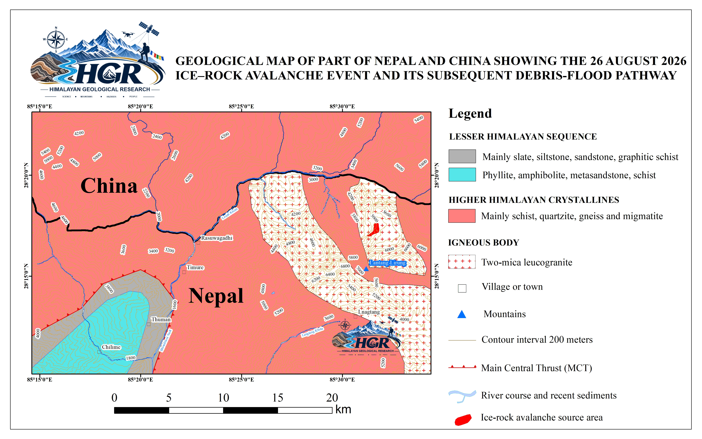
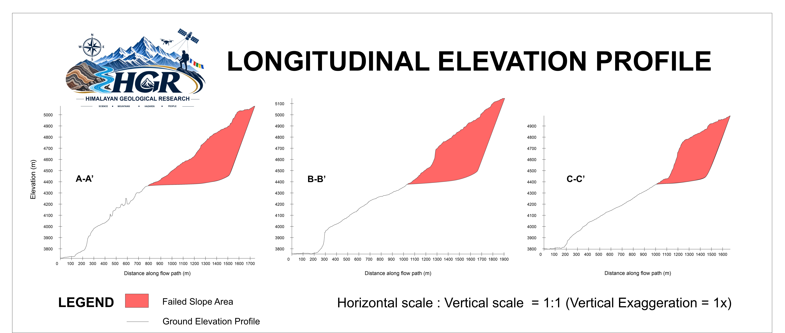

Scientific Investigation of the 26 August 2026 Rasuwa Ice–Rock Avalanche and Subsequent Flash Flood in the Nepal–China Transboundary Himalaya using Satellite Imagery, DEM Analysis, Seismic Evidence and Geospatial Methods
Event Overview
On 26 August 2026, at approximately 8:37 a.m., a major ice–rock avalanche occurred in the high Himalayan terrain of the Nepal–China transboundary region near the Langtang Lirung and Tsangbu Ri mountains in Rasuwa, Nepal. The event involved the catastrophic collapse of a large rock mass together with the overlying ice/glacier, generating a massive downslope movement. Following the initial failure, the displaced material entered the Lhende Khola, Bhote Koshi River, and Trishuli River, where it transformed into a highly channelized debris flow and flood. The flow propagated downstream along the Trishuli River corridor toward the Rasuwagadhi–Kerung area, resulting in extensive geomorphic changes, river-channel disturbance, sediment deposition, and impacts on infrastructure and transportation. The event represents a significant high-mountain cascading hazard in which an ice–rock avalanche evolved into a large downstream debris-flow and flood event with transboundary consequences.

Geological Overview
The study area lies within the tectonically active Himalayan orogenic belt along the Nepal–China transboundary region. The Higher Himalayan Crystalline overlies the Lesser Himalayan Sequence along the Main Central Thrust (MCT) zone south of the avalanche source area. The region comprises metamorphic and crystalline rocks, including gneiss, schist, quartzite, granitoids, and leucogranites, affected by intense deformation and fracturing. Steep, high-relief terrain and glacial processes further contribute to slope instability.

Volume Estimation of the Failed Mass
The volume of the failed mass was estimated using a cross-sectional profile method. Three representative profiles (A–A′, B–B′, and C–C′) were constructed approximately perpendicular to the longitudinal extent of the failure zone. The calculated cross-sectional areas were 247,622.20 m², 257,214.55 m², and 176,729.96 m², respectively. The mean cross-sectional area derived from these three profiles was 227,188.90 m². An 871.64 m longitudinal extent of the crack/failure zone, measured from EOS imagery, was used as the third dimension for the volume calculation. Accordingly, the estimated volume of the displaced material was calculated as: V = Mean cross-sectional area × longitudinal extent V = 227,188.90 m² × 871.64 m V ≈ 198,026,936 m³ Thus, the estimated volume of the failed/displaced material is approximately 1.98 × 10⁸ m³ (198.03 million m³). This profile-based estimate represents an approximation of the total failed-material volume and should be interpreted in conjunction with the spatial distribution, geometric variability, and representativeness of the selected cross-sectional profiles across the source area.

Three representative cross-sections (A–A′, B–B′, and C–C′) were used separately to estimate the volume of the ice component and the total collapsed ice–rock mass. For the ice component, the measured cross-sectional areas of 20,254.77, 21,291.52, and 15,362.28 m² yielded a mean area of 18,969.52 m². Using a length of 871.64 m, the estimated ice volume was 16,534,595.32 m³ (16.53 million m³). Accordingly, the ice component constitutes approximately 8.35% of the total avalanche volume, while the remaining 91.65% represents rock. Assuming representative densities of 900 kg/m³ for glacier ice and 2,700 kg/m³ for the predominantly leucogranite and pegmatitic–gneissic rock mass, the estimated ice mass is approximately 14.88 million tons, compared with approximately 490.03 million tons of rock. Thus, the ice-to-rock ratio is approximately 1:11.0 by volume but approximately 1:32.9 by mass. Although ice constitutes approximately 8.35% of the total volume, it contributes only about 2.95% of the estimated total mass, whereas rock account for approximately 97.05% of the total mass. The combined estimated mass of the collapsed ice–rock material is therefore approximately 504.91 million tons.